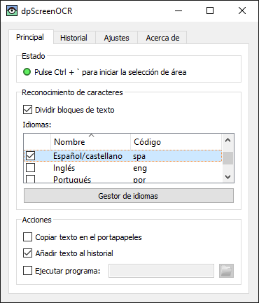

dpScreenOCR es un programa para reconocer el texto en pantalla. Funciona mediante Tesseract, admite más de 100 lenguas y es capaz de dividir bloques de texto independientes, como columnas. Lea el manual para obtener instrucciones de instalación, configuración y uso del programa.
Descárguese la versión 1.3.0 (novedades, licencia):
Contribuya al participar en la traducción o el desarrollo.